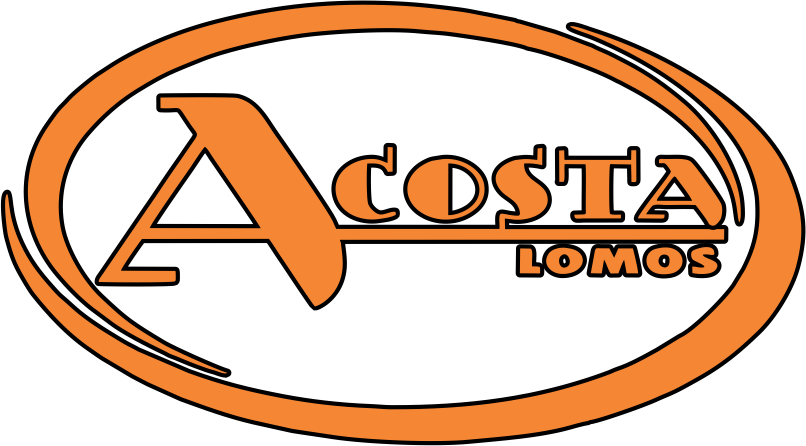

☆

Un poco de nosotros
Nacimos del sueño de dos hermanos.
"Cada lomito es una expresión de nuestro compromiso con la calidad y el sabor."
Acosta Lomos nació de la pasión compartida de Iván y Cristian, quienes convirtieron su amor por los lomitos en una experiencia culinaria única. Trabajando codo a codo, cuidando cada detalle — desde los ingredientes frescos hasta el toque especial que distingue cada bocado.
En Acosta Lomos, creemos que un buen lomito no es solo un plato, sino un momento de disfrute. Por eso ponemos el corazón en cada preparación.
Más que comida, ofrecemos momentos únicos de sabor y calidad para quienes buscan lo mejor.